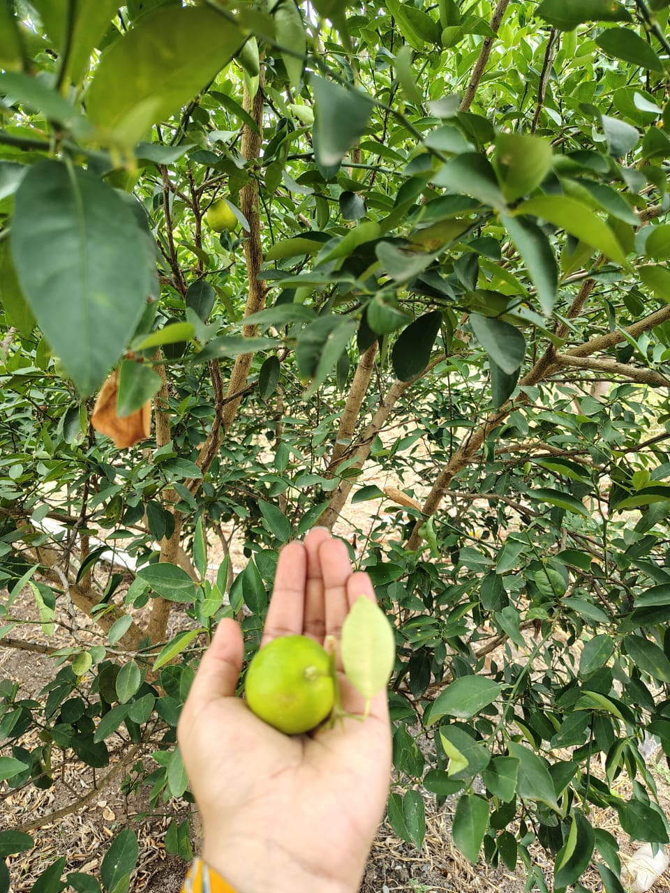
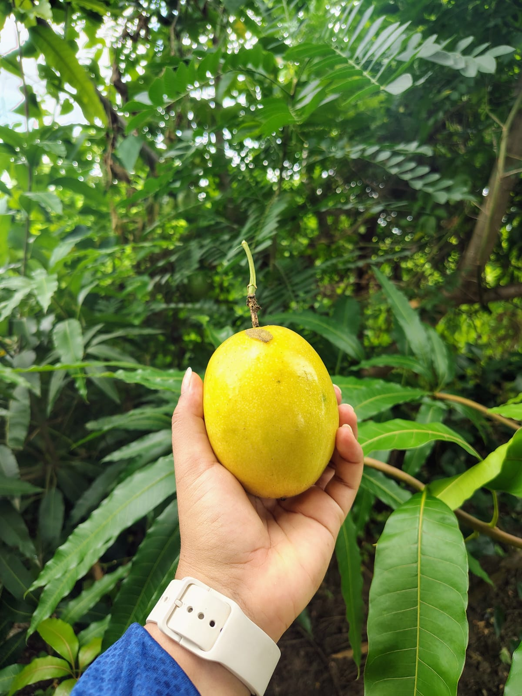
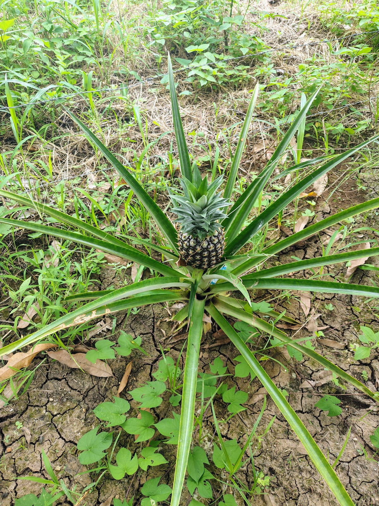
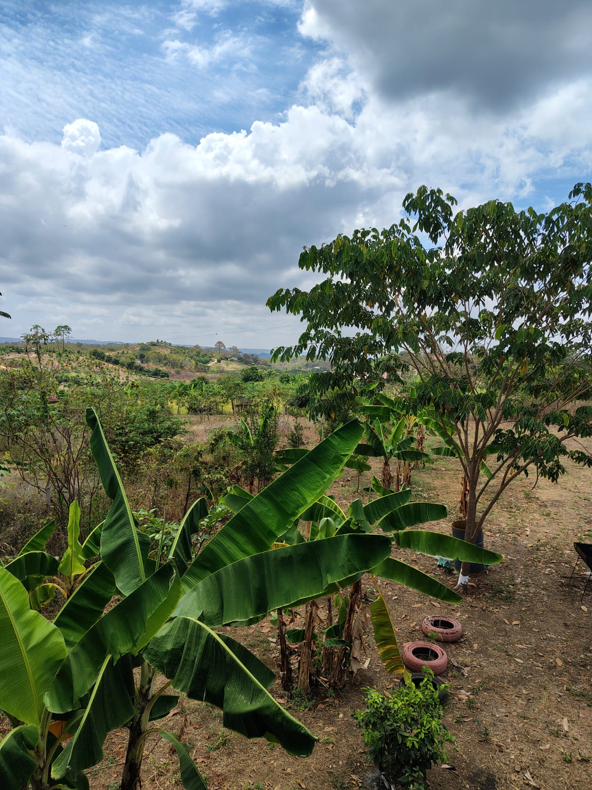
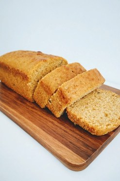
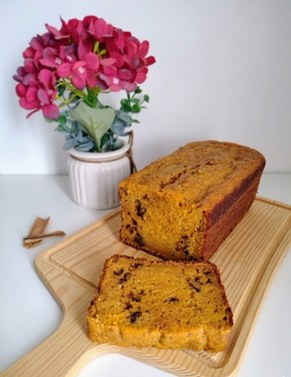
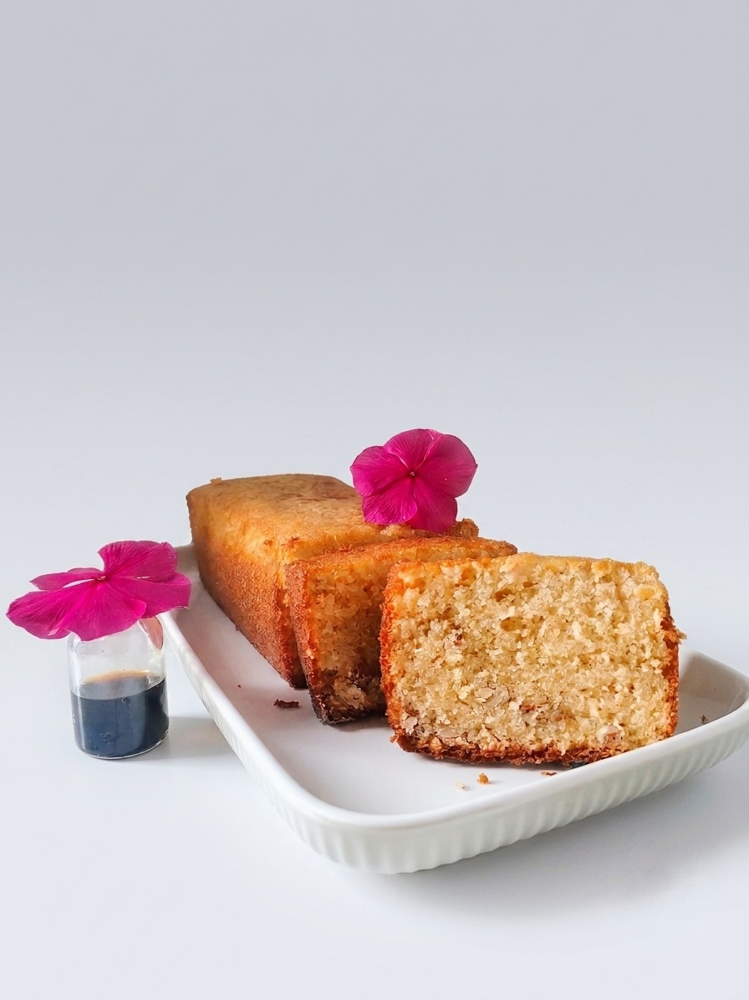

Chocolate
Nuestro clásico: intenso en cacao, húmedo por dentro, con un toque de café que resalta el sabor a chocolate.
En Bere & Miga horneamos cakes artesanales tipo pan loaf, desde el clásico de chocolate hasta el de maracuyá con fruta de nuestro propio huerto. Aquí te mostramos cómo los preparamos, sabor por sabor.
Via a la Costa disponemos de nuestro huerto propio donde sembramos limón, maracuyá, piña, mango y otras frutas. Cuando la cosecha lo permite, esa misma fruta es la que llega a nuestra cocina: así, el maracuyá de nuestros cakes no viene de un empaque genérico, sino de una planta que conocemos y cuidamos nosotros mismos.




Cada cake se hornea el mismo día del pedido, siguiendo cuatro pasos que nunca cambian, sin importar el sabor.
Elegimos fruta de nuestro huerto cuando la temporada acompaña, además de huevos y lácteos frescos cada semana antes de encender el horno.
Cada mezcla se prepara con cuidado, respetando los tiempos de batido de cada receta.
Horneamos entre 40 y 55 minutos, vigilando el punto exacto con la prueba del palillo.
Dejamos enfriar cada cake antes de cortarlo y empacarlo listo para entregar.
Siete sabores horneados en casa; varios de ellos con fruta que cosechamos en nuestro propio huerto.
Nuestro clásico: intenso en cacao, húmedo por dentro, con un toque de café que resalta el sabor a chocolate.

Suave y mantecoso, con el toque ácido y aromático del maracuyá fresco en cada bocado.

Especiado con canela y nuez moscada, cargado de zanahoria fresca y nueces pecanas tostadas.
Perfumado con ralladura de naranja y bañado en su propio jugo fresco para un sabor cítrico intenso.

El favorito de siempre: esponjoso, aromático y con el sabor puro de una buena esencia de vainilla.
Bizcocho ligero y aireado, la base perfecta para nuestro pastel de tres leches.
Hecho con bananos bien maduros y un toque de canela, húmedo y reconfortante como el de casa.
¿Quieres saber más sobre algún sabor? Escríbenos por WhatsApp.
Escríbenos y coordinamos tu pedido. Recomendamos ordenar con al menos 48 horas de anticipación.
Nota para Bere: estos son datos de ejemplo. Busca "REEMPLAZAR" en el archivo index.html para poner tu número, usuario y correo reales.